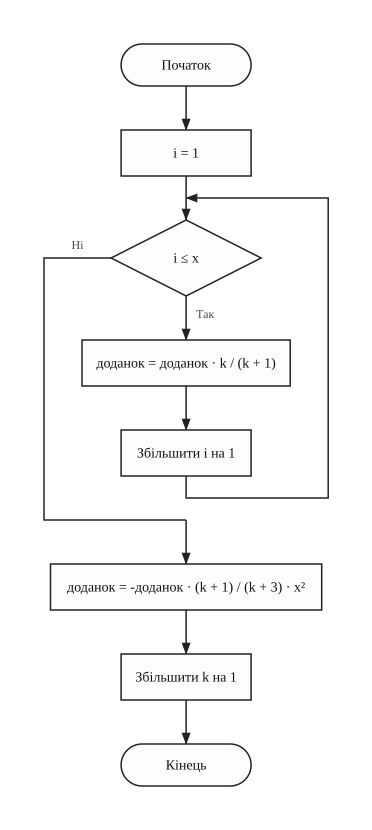
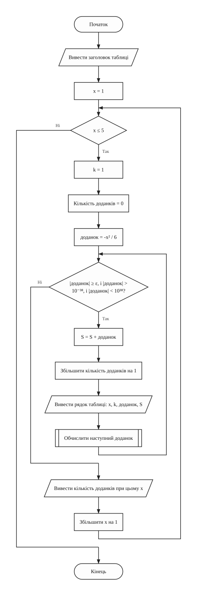
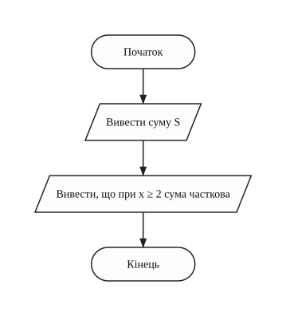
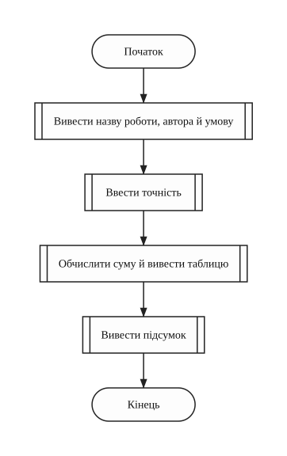
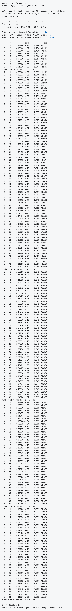
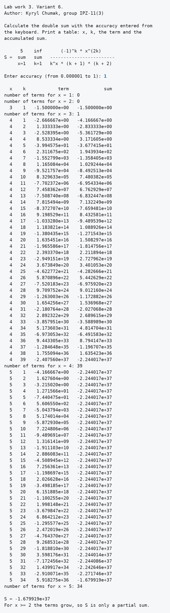
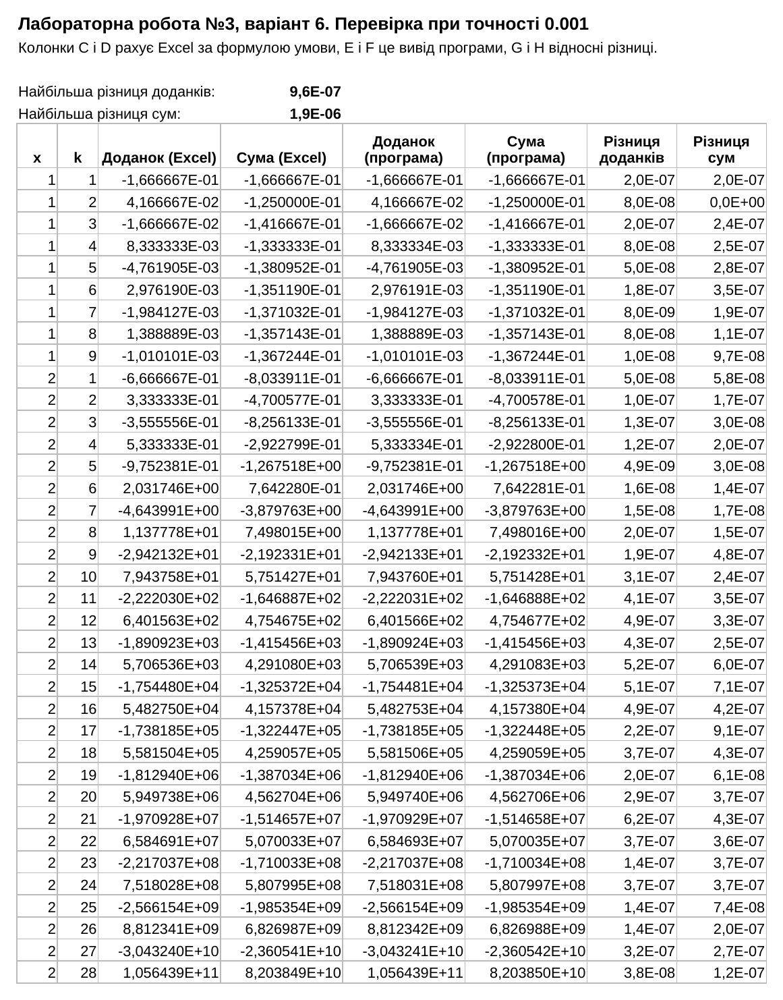

Варіант 6. Виконав Чумак Кирил, група ІПЗ-11(3). Викладач Ковалюк Тетяна Володимирівна.
Мета роботи
- Вивчити особливості циклічних обчислювальних процесів.
- Опанувати технологію використання операторів циклів.
- Навчитися розробляти алгоритми та програми циклічних процесів.
Умова задачі
Варіант 6. У таблиці методички 22 варіанти, тому для номера 28 у списку групи маємо 28 - 22 = 6.
Обчислити подвійну суму:
Зовнішню суму від 1 до 5 рахувати циклом for, внутрішню циклом while
або do ... while. Нескінченність визначається точністю, яку задає користувач:
підсумовування припиняється, коли її досягнуто. Кількість доданків внутрішньої суми для кожного
x має бути різною. Степінь і факторіал рахувати за рекурентними співвідношеннями. Щоб не було
переповнення, вийти з внутрішнього циклу, коли доданок досягає 10-38 або
10+38. Результат подати таблицею з колонками: параметри обох сум, доданок і накопичена
сума.
Аналіз задачі
При k = 0 у знаменнику стоїть 0x, тобто нуль, і доданок не існує. Тому внутрішня сума в програмі починається з k = 1. Перший доданок для кожного x дорівнює -x2 / 6.
Щоб не підносити числа до степеня, наступний доданок отримуємо з поточного:
Множник (k / (k + 1))x рахується окремим циклом із x множень у функції
calculateNextTerm.
При x = 1 доданки зменшуються, і цикл зупиняється, коли модуль доданка стає меншим за точність. При x ≥ 2 чисельник росте швидше за знаменник, ряд розбігається, тому для цих x цикл зупиняється на межі 1038, а S є лише частковою сумою. Програма пише про це в кінці. Доданок, менший за точність, до суми не входить.
Точність вводиться від 10-6 до 1. Якщо введено не число або число поза межами, програма виводить повідомлення і просить ввести ще раз.
Таблиця 1 - Функції програми
| Функція | Що робить |
|---|---|
printTitle | виводить назву роботи, автора й умову завдання |
inputAccuracy | вводить точність із перевіркою |
calculateNextTerm | обчислює наступний доданок через поточний |
calculateSum | рахує суму у двох циклах і виводить таблицю |
printResult | виводить суму S |
main | викликає ці функції по черзі |
Джерела: Ковалюк Т.В. Алгоритмізація та програмування, 2024; Ковалюк Т.В., Петрівський В.Я. Гарний стиль програмування мовами C, C++, C#, 2025.
Блок-схема алгоритму

printTitle (виведення назви роботи, автора й умови завдання)
inputAccuracy (введення точності з перевіркою)
calculateNextTerm (обчислення наступного доданка через поточний)
calculateSum (обчислення суми й виведення таблиці)
printResult (виведення підсумку)
main (головна функція)Текст програми
Файл task1.cpp
/// <summary>
/// Лабораторна робота №3, варіант 6. Обчислити подвійну суму із заданою
/// точністю і подати обчислення таблицею.
/// </summary>
/// <remarks>
/// Ім'я файлу: task1.cpp
/// Автор: Чумак Кирил, гр. ІПЗ-11(3)
/// Номер версії модуля: version 1
/// </remarks>
#include <cmath>
#include <iomanip>
#include <iostream>
using namespace std;
// Константи
const float MIN_ACCURACY = 0.000001f; // нижня межа точності
const float MAX_ACCURACY = 1; // верхня межа точності
const float SMALL_LIMIT = 1e-38f; // межі модуля доданка з умови
const float BIG_LIMIT = 1e38f;
// Глобальні змінні
float accuracy = 0; // задана точність
float term = 0; // поточний доданок
float total = 0; // накопичена сума
int x = 0; // параметр зовнішньої суми
int k = 0; // параметр внутрішньої суми
int termCount = 0; // кількість доданків при поточному x
/// <summary>
/// Виводить назву роботи, автора і формулу суми
/// </summary>
void printTitle()
{
cout << "Lab work 3. Variant 6." << endl;
cout << "Author: Kyryl Chumak, group IPZ-11(3)" << endl << endl;
cout << "Calculate the double sum with the accuracy entered from" << endl;
cout << "the keyboard. Print a table: x, k, the term and the" << endl;
cout << "accumulated sum." << endl << endl;
cout << " 5 inf (-1)^k * x^(2k)" << endl;
cout << "S = sum sum ------------------------" << endl;
cout << " x=1 k=1 k^x * (k + 1) * (k + 2)" << endl << endl;
}
/// <summary>
/// Вводить точність. Поки введено не число або число поза межами, введення
/// повторюється
/// </summary>
void inputAccuracy()
{
cout << "Enter accuracy (from 0.000001 to 1): ";
cin >> accuracy;
while (cin.fail() || accuracy < MIN_ACCURACY || accuracy > MAX_ACCURACY)
{
cin.clear(); // скинути помилку введення
cin.ignore(1000, '\n'); // і пропустити неправильний рядок
cout << "Error! Enter accuracy from 0.000001 to 1: ";
cin >> accuracy;
}
}
/// <summary>
/// Отримує наступний доданок із поточного: множить його на -x^2 * (k + 1) / (k
/// + 3) і x разів на k / (k + 1)
/// </summary>
void calculateNextTerm()
{
int i = 0; // лічильник множень
for (i = 1; i <= x; i++)
{
term = term * k / (k + 1);
}
term = -term * (k + 1) / (k + 3) * x * x;
k++;
}
/// <summary>
/// Рахує суму і виводить таблицю. Внутрішній цикл працює, поки модуль доданка
/// не менший за точність і лежить між межами умови
/// </summary>
void calculateSum()
{
cout << endl << scientific << setprecision(6);
cout << setw(3) << "x" << setw(5) << "k" << setw(16) << "term" << setw(16)
<< "sum" << endl;
for (x = 1; x <= 5; x++)
{
k = 1;
termCount = 0;
term = -(float)(x * x) / 6; // перший доданок, коли k = 1
while (fabs(term) >= accuracy && fabs(term) > SMALL_LIMIT
&& fabs(term) < BIG_LIMIT)
{
total = total + term;
termCount++;
cout << setw(3) << x << setw(5) << k << setw(16) << term << setw(16)
<< total << endl;
calculateNextTerm();
}
cout << "number of terms for x = " << x << ": " << termCount << endl;
}
}
/// <summary>
/// Виводить підсумок
/// </summary>
void printResult()
{
cout << endl << "S = " << total << endl;
cout << "For x >= 2 the terms grow, so S is only a partial sum." << endl;
}
/// <summary>
/// Головна функція програми
/// </summary>
/// <returns>0 після завершення роботи</returns>
int main()
{
printTitle();
inputAccuracy();
calculateSum();
printResult();
return 0;
}
Результати виконання
Таблиці довгі, бо при x ≥ 2 цикл доходить до межі 1038. Рисунок можна відкрити окремо.


Аналіз достовірності результатів
Перевірка в Excel
У файлі check.xlsx доданки обчислено прямо за формулою умови
через POWER, без рекурентної формули. Поруч стоять значення, які вивела програма при
точності 0.001. Значення дуже великі, тому порівнюється відносна різниця.

Найбільша відносна різниця доданків 9.6 · 10-7, сум 1.9 · 10-6. Це похибка
типу float, який зберігає близько 7 значущих цифр.
Ручна перевірка
Таблиця 2 - Доданки, обчислені вручну
| x | k | За формулою | Значення | Програма |
|---|---|---|---|---|
| 1 | 1 | -1 / (1 · 2 · 3) | -0.166667 | -1.666667e-01 |
| 1 | 2 | 1 / (2 · 3 · 4) | 0.041667 | 4.166667e-02 |
| 2 | 2 | 16 / (4 · 3 · 4) | 0.333333 | 3.333333e-01 |
| 3 | 1 | -9 / (1 · 2 · 3) | -1.5 | -1.500000e+00 |
При точності 1 для x = 1 і x = 2 перший доданок менший за 1, тому програма не додає жодного. Для x = 3 додається лише -1.5, бо наступний доданок дорівнює 0.84375. Програма вивела кількість доданків 0, 0 і 1, що збігається з цим розрахунком.
Висновки
Написано програму з двома вкладеними циклами, яка рахує суму за рекурентною формулою і виводить
таблицю. Формула умови не працює при k = 0, тому сума починається з k = 1. Ряд сходиться лише при
x = 1, а для більших x сума часткова і обмежена межею 1038. Значення в Excel, пораховані
напряму, збіглися з виводом програми в межах точності float.